| 옅은 전갱이 | 배 검댕이 | 긴지느러미 물고기 |
|---|---|---|
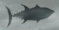 | 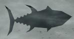 | 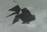 |
| 스나이퍼어 | 봄바람 잉어 | 통통 장어 |
|---|---|---|
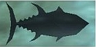 | 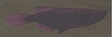 | 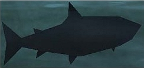 |
| 하레츠아로에나 | 바쿠레츠아로에나 | 도스아로에나 |
|---|---|---|
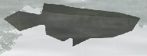 | 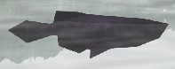 | 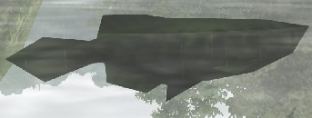 |
| 예리어 | 도스 예리어 |
|---|---|
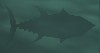 | 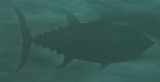 |
| 가시 참치 | 도스 가시 참치 | 청새치 |
|---|---|---|
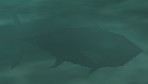 | 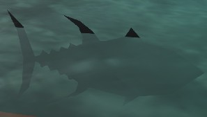 | 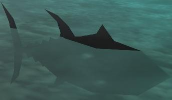 |
| 도스 수면어 | 확산 금붕어 | 여왕 새우 |
|---|---|---|
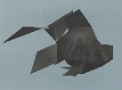 | 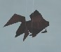 | 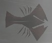 |
| 백금어 | 고대어 | 황금어 |
|---|---|---|
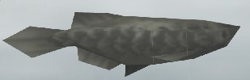 | 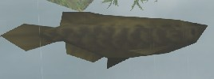 | 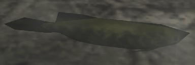 |
| 대식가 참치 |
|---|
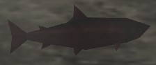 |